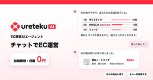
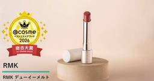
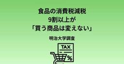

ECのミカタ
https://ecnomikata.com
ネットショップ運営を支援するビジネスポータル「ECのミカタ」。手間をかけずに、貴社ネット通販事業の収益性・業務効率性を高めるヒントを手に入れることが出来ます。
フィード
Amazon、2026年のブラックフライデーは【ピタリ買い】志向に対応 「厳選目玉商品」「日替わり目玉商品」も展開
ECのミカタ
Amazonは年末最後のビッグセール「Amazon ブラックフライデー」を11月30日 0:00から12月7日 23:59までの8日間にわたって開催する（先行セールは11月27日から11月29日までの3日間）。セールの詳細が発表された11月19日には記者会見も行われ、アマゾンジャパン合同会社の鈴木浩司氏と、世代・トレンド評論家の牛窪恵氏が登壇。先立って発表された「暮らしとお買い物に関する意識調査2026」に表れた消費者の「ピタリ買い」ニーズを解説しつつ、今年の「Amazon ブラックフライデー」の注目ポイントを紹介した。●関連記事：約7割が予算・自分・タイミングに合う「ピタリ買い」を重視 Amazon調査https://ecnomikata.com/ecnews/marketing/52161/
1日前
ショッピージャパン、「11.11 Mega Day」で日本の越境セラーが7市場で好調
ECのミカタ
ショッピージャパン株式会社は2026年11月19日、「11.11 Mega Day」において、日本の越境セラーの流通取引総額（GMV）が開始4分間で2026年第2四半期の同時間帯平均の24倍、注文数も21倍に達したことを発表した。
1日前


Yahoo!ショッピング、訪日外国人向け「オンライン免税ECサービス」提供開始
ECのミカタ
LINEヤフー株式会社は2026年11月19日、訪日外国人旅行者向けオンライン免税ECサービス「SAKURA Tax-free Online」の提供を開始した。
1日前

博報堂、エージェンティックコマース領域におけるShopify連携ソリューションを提供
ECのミカタ
株式会社博報堂及び株式会社Hakuhodo DY ONEは2026年11月16日、「エージェンティックコマース」領域においてShopify Japan株式会社（以下、Shopify）のプラットフォームと連携した新ソリューションの提供を開始すると発表した。
1日前

@cosmeが2027年上半期トレンド予測 「四季ガチャ攻略」など6キーワードを発表
ECのミカタ
株式会社アイスタイルは2026年11月18日、@cosmeに寄せられるクチコミや店舗の売り上げ等の分析から2027年上半期のNEXTトレンドを予測する「2027年上半期@cosmeトレンド予測」を発表した。この予測は、今後の生活者インサイトや美容トレンドを予測するために発足した「＠cosmeトレンド予測部」が、2027年上半期のトレンドをキーワード化したものである。
1日前

STRACT、EC運営AIエージェントを本格始動、AIに選ばれる商品データに整理
ECのミカタ
株式会社STRACTは2026年11月18日、EC事業者へ向けたEC運営AIエージェント「ureteku AI（ウレテク エーアイ）」、および顧客に対する国内ECに特化したパーソナルAIエージェント「DONDO」の提供を発表した。
1日前

商談準備時間を3分の1に、生産性を3倍へ。ミスミが実践する顧客データ起点のRevOps
ECのミカタ
BtoB ECや法人向けサービスでは、顧客接点が増えるほど、「次に誰へ、何を届けるべきか」が見えにくくなる。データは蓄積されているのに、マーケティング、営業、カスタマーサクセスの動きがつながらず、次の一手に生かしきれない──そんな課題を抱える事業者は少なくない。製造業DXを推進するミスミのオンライン部品調達サービス「meviy（メビー）」は、CADデータをアップロードするだけで、部品の見積もりから発注までをWeb上で完結できるサービスだ。同社はその成長過程で、顧客データを起点に部門横断の活動をつなぐRevOps（レベニューオペレーション）の仕組みを構築してきた。本稿では、商談準備時間を3分の1に削減し、生産性を3倍に高めた同社の実践から、顧客データを起点にしたRevOps実装のポイントをひも解く。※本記事は2026年5月開催「ECのミカタ カンファレンス」で行われた株式会社ミスミ 柳沢将人氏のセッションをレポートしたものです
2日前

アイスタイル、「@cosmeベストコスメアワード2026」発表
ECのミカタ
株式会社アイスタイルは2026年11月18日、2026年に生活者に支持されたコスメを総括する「@cosmeベストコスメアワード2026」を発表した。本記事では、受賞商品とともに、今回発表されたトレンド分析を紹介する。
2日前
「ブラックフライデー」女性の7割以上が総合ECモールを利用 Qoo10調査
ECのミカタ
インターネット総合ショッピングモール「Qoo10」を運営するeBay Japan合同会社は2026年11月18日、「働く女性の2026年ブラックフライデーに向けた調査」の結果を発表した。
2日前

2026年クリスマス、約6割が「プレゼントをブラックフライデーで購入」 スクロール調査
ECのミカタ
株式会社スクロールは2026年11月17日、ブラックフライデーとクリスマスの購買行動に関する調査の結果を発表した。
2日前

SNS・動画がきっかけの購入経験4割以上、購入先はAmazonが最多 シード調査
ECのミカタ
株式会社シードが運営するマーケティングメディア「デジマ部」は2026年11月17日、「SNSと動画の利用実態調査2026」の結果を発表した。
2日前

「希望の決済手段がない」と6割が離脱？ アルビオン×KOMOJUが紐解く、カゴ落ちを防ぎリピートを呼ぶ【決済CX】の盲点
ECのミカタ
広告で集客し、導線を磨き、ようやくカートに入れてもらった。それなのに、いざ購入という場面で、お客さまの気持ちがスッと冷めてしまっているとしたら……。買い物を「効率的な作業」ではなく「楽しむレジャー」と捉え直したとき、EC事業者が見直すべき顧客体験の盲点はどこにあるのか。Shopifyを活用して自社ECやブランドサイトの立ち上げ、CX推進を牽引してきた株式会社アルビオンの榊原隆之氏は、「購入しようとする気持ちの盛り上がりを下げない顧客体験」の重要性を強調する。そのカギを握るのは「シンプルな決済」だ。一方、マルチチャネル決済プラットフォーム「KOMOJU（コモジュ）」を運営する株式会社KOMOJUの松岡将史氏は、独自の消費者調査データをもとに、「購入意欲を途切れさせない環境づくり」の重要性をひも解く。本稿では、両氏のセッションから、EC事業者が見落としがちな“盲点”を紹介する。※本記事は2026年10月開催「ECのミカタ カンファレンス」で行われた株式会社アルビオン 榊原隆之氏と、株式会社KOMOJU 松岡将史氏のセッションをレポートしたものです
3日前
無料再配達「無いと困る」7割も「有料なら自分で取りに行く」約4割 X Mile調査
ECのミカタ
X Mile株式会社は2026年11月17日、「生活インフラとサービスに関する意識調査」の結果を発表した。
3日前

あきんどスシロー、ECサイト「スシロー公式オンラインストア」をオープン
ECのミカタ
株式会社あきんどスシローは2026年11月16日、ECサイト「スシロー公式オンラインストア」を11月10日にオープンしたことを発表した。
3日前

メルカリ、「超メルカリ市」2026年11月26日から開催 配送料値引きキャンペーンも
ECのミカタ
株式会社メルカリは2026年11月19日、「超売れる！超買える！超ワクワク！」をテーマにした「超メルカリ市」の第五弾を、2026年11月26日から12月15日の20日間にわたって開催すると発表した。
3日前

Yahoo!ショッピング、BFにあわせて新機能「あなただけのAIおトクスケジュール」提供開始
ECのミカタ
LINEヤフー株式会社が運営する「Yahoo!ショッピング」は2026年11月22日から11月29日まで開催している「ブラックフライデー」にあわせ、新機能「あなただけのAIおトクスケジュール」の提供を開始した。
3日前

情報漏洩を知り「新規会員登録に慎重になった」約5割 あるるモール調査
ECのミカタ
株式会社システムリサーチが運営する創作品モール「あるる」（以下、あるるモール）は2026年11月15日、「情報漏洩に対する意識」に関するアンケート調査の結果を発表した。
3日前

食品の消費税減税、9割以上が「買う商品は変えない」 明治大学調査
ECのミカタ
明治大学専門職大学院グローバル・ビジネス研究科の白鳥和生ゼミは2026年11月16日、食品の消費税減税によってスーパーで買う商品が変わるか、マクロミルの意見募集サービス「ミルトーク」の自由回答を分析した結果を発表した。
3日前